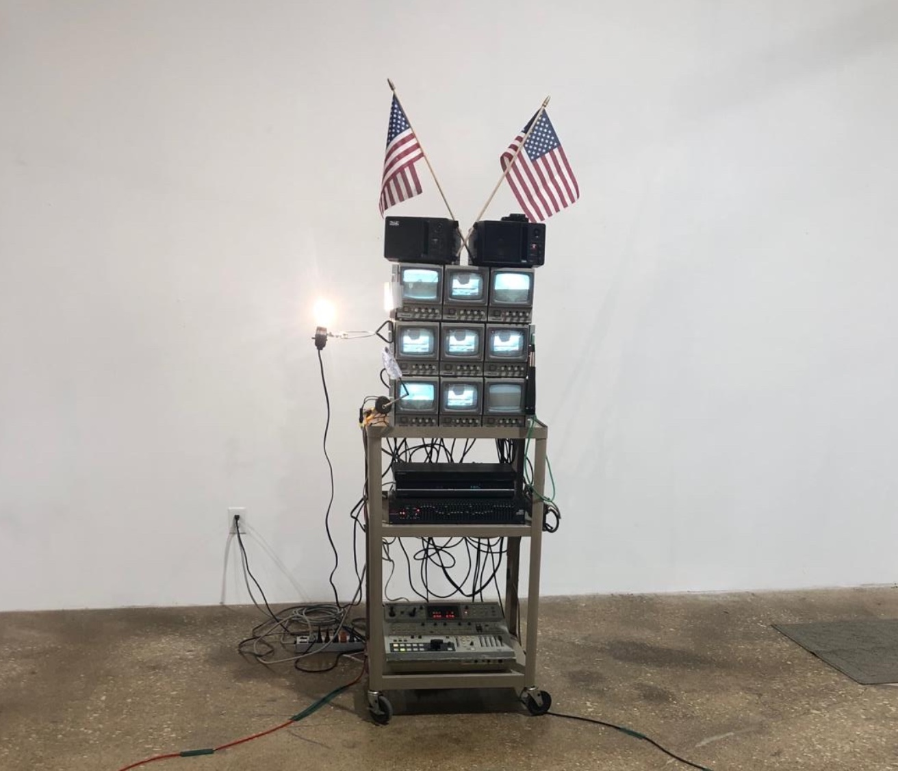
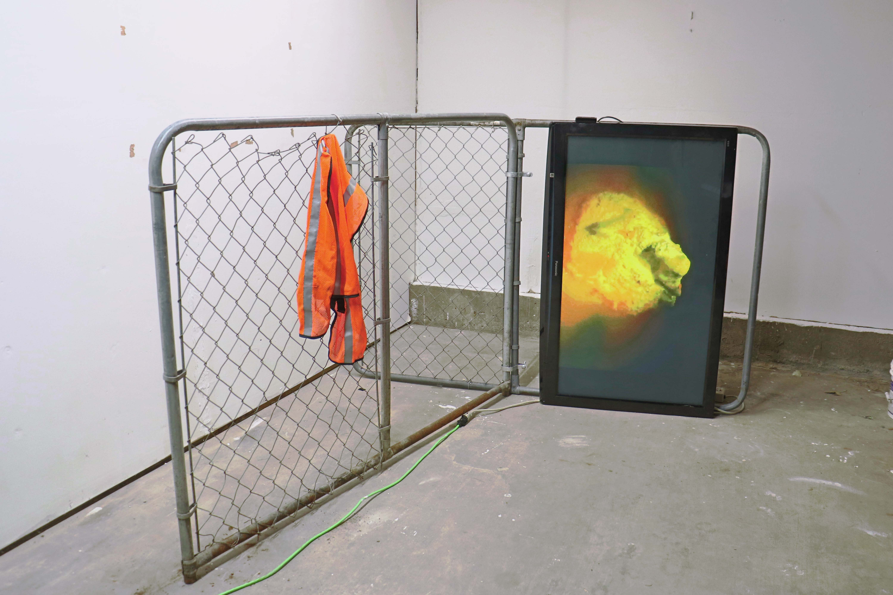
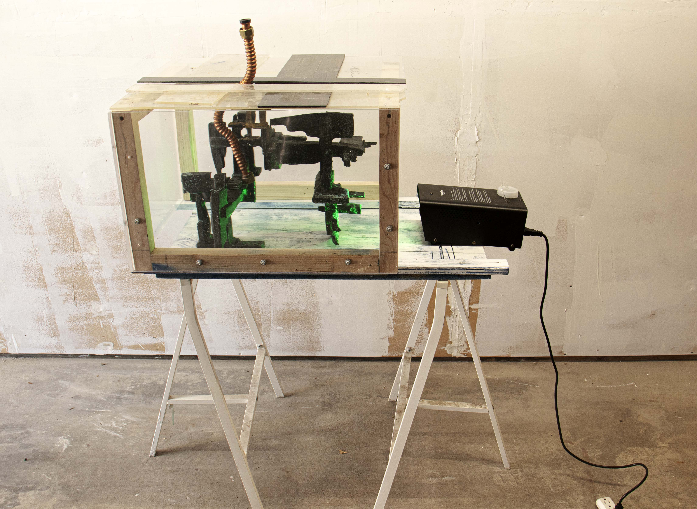
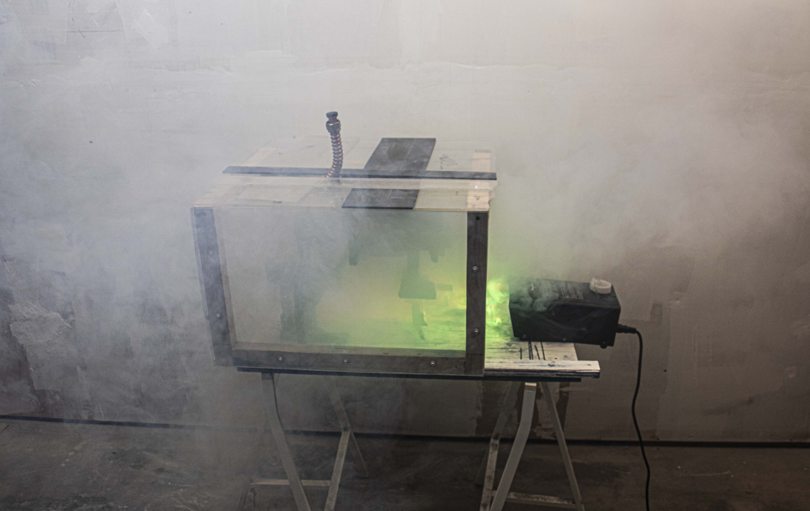
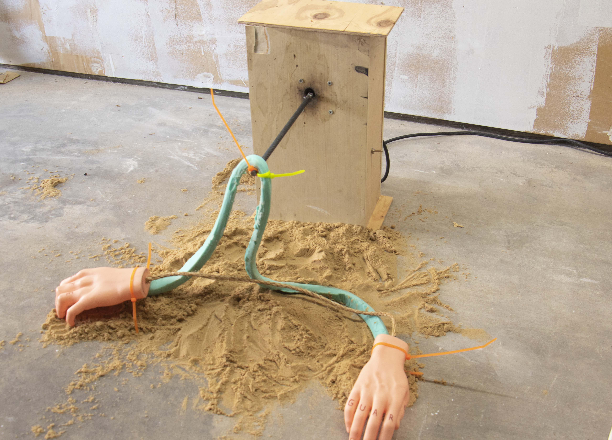

Universal Noise
Sound / New Media / Installation

About the Work
Universal Noise is a series of experimental works that explores the relationship between art, architecture, and sound through immersive and time-based media.
Combining video, sound, sculpture, and performance, the project imagines speculative devices and structures shaped by uninhabitable terrains and future landscapes. These forms function as both architectural propositions and sculptural instruments, occupying a space between utility and fiction.
Inspired by the Fluxus movement and interdisciplinary artistic practices, the work investigates systems of chance, duration, and participation. Each element is activated through time-based interactions that blur the boundaries between object, performance, and environment.
Through the intersection of sculpture, sound, and architecture, Universal Noise examines how technological and cultural systems shape our perception of space, transforming noise into a material for speculation, reflection, and collective experience.



